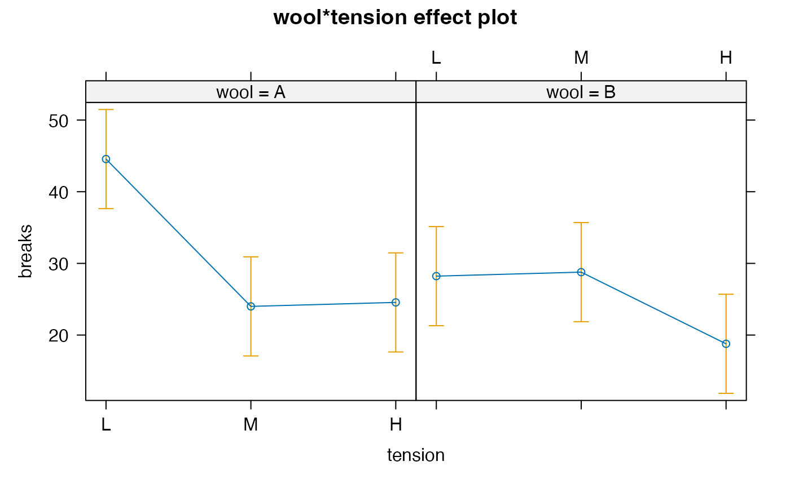

Methods have been written that allow glmmTMB objects to be used with
several downstream packages that enable different forms of inference.
For some methods (Anova and emmeans, but not effects at present),
set the component argument
to "cond" (conditional, the default), "zi" (zero-inflation) or "disp" (dispersion) in order to produce results
for the corresponding part of a glmmTMB model.
Support for emmeans also allows additional options
component = "response" (response means taking both the cond and
zi components into account), and component = "cmean" (mean of the
[possibly truncated] conditional distribution).
In particular,
car::Anovaconstructs type-II and type-III Anova tables for the fixed effect parameters of any componentthe
emmeanspackage computes estimated marginal means (previously known as least-squares means) for the fixed effects of any component, or predictions withtype = "response"ortype = "component". Note: In hurdle models,component = "cmean"produces means of the truncated conditional distribution, whilecomponent = "cond", type = "response"produces means of the untruncated conditional distribution.the
effectspackage computes graphical tabular effect displays (only for the fixed effects of the conditional component)
Arguments
- mod
a glmmTMB model
- type
type of test,
"II","III",2, or3. Roman numerals are equivalent to the corresponding Arabic numerals. SeeAnovafor details.- test.statistic
unused: only valid choice is "Chisq" (i.e., Wald chi-squared test)
- component
which component of the model to test/analyze ("cond", "zi", or "disp") or, in emmeans only, "response" or "cmean" as described in Details.
- vcov.
variance-covariance matrix (usually extracted automatically)
- singular.ok
OK to do ANOVA with singular models (unused) ?
- include.rankdef.cols
include all columns of a rank-deficient model matrix?
- ...
Additional parameters that may be supported by the method.
- focal.predictors
a character vector of one or more predictors in the model in any order.
Details
While the examples below are disabled for earlier versions of
R, they may still work; it may be necessary to refer to private
versions of methods, e.g. glmmTMB:::Anova.glmmTMB(model, ...).
Examples
warp.lm <- glmmTMB(breaks ~ wool * tension, data = warpbreaks)
salamander1 <- up2date(readRDS(system.file("example_files","salamander1.rds",package="glmmTMB")))
if (require(emmeans)) withAutoprint({
emmeans(warp.lm, poly ~ tension | wool)
emmeans(salamander1, ~ mined, type="response") # conditional means
emmeans(salamander1, ~ mined, component="cmean") # same as above, but re-gridded
emmeans(salamander1, ~ mined, component="zi", type="response") # zero probabilities
emmeans(salamander1, ~ mined, component="response") # response means including both components
})
#> Loading required package: emmeans
#> > emmeans(warp.lm, poly ~ tension | wool)
#> $emmeans
#> wool = A:
#> tension emmean SE df lower.CL upper.CL
#> L 44.6 3.44 47 37.6 51.5
#> M 24.0 3.44 47 17.1 30.9
#> H 24.6 3.44 47 17.6 31.5
#>
#> wool = B:
#> tension emmean SE df lower.CL upper.CL
#> L 28.2 3.44 47 21.3 35.1
#> M 28.8 3.44 47 21.9 35.7
#> H 18.8 3.44 47 11.9 25.7
#>
#> Confidence level used: 0.95
#>
#> $contrasts
#> wool = A:
#> contrast estimate SE df t.ratio p.value
#> linear -20.00 4.86 47 -4.113 0.0002
#> quadratic 21.11 8.42 47 2.507 0.0157
#>
#> wool = B:
#> contrast estimate SE df t.ratio p.value
#> linear -9.44 4.86 47 -1.942 0.0581
#> quadratic -10.56 8.42 47 -1.253 0.2163
#>
#>
#> > emmeans(salamander1, ~mined, type = "response")
#> mined rate SE df asymp.LCL asymp.UCL
#> yes 1.09 0.254 Inf 0.692 1.72
#> no 3.42 0.311 Inf 2.862 4.09
#>
#> Confidence level used: 0.95
#> Intervals are back-transformed from the log scale
#> > emmeans(salamander1, ~mined, component = "cmean")
#> mined emmean SE df asymp.LCL asymp.UCL
#> yes 1.09 0.254 Inf 0.594 1.59
#> no 3.42 0.311 Inf 2.811 4.03
#>
#> Confidence level used: 0.95
#> > emmeans(salamander1, ~mined, component = "zi", type = "response")
#> mined response SE df asymp.LCL asymp.UCL
#> yes 0.758 0.0432 Inf 0.663 0.832
#> no 0.355 0.0279 Inf 0.303 0.411
#>
#> Confidence level used: 0.95
#> Intervals are back-transformed from the logit scale
#> > emmeans(salamander1, ~mined, component = "response")
#> mined emmean SE df asymp.LCL asymp.UCL
#> yes 0.265 0.0484 Inf 0.17 0.36
#> no 2.206 0.2165 Inf 1.78 2.63
#>
#> Confidence level used: 0.95
if (getRversion() >= "3.6.0") {
if (require(car)) withAutoprint({
Anova(warp.lm,type="III")
Anova(salamander1)
Anova(salamander1, component="zi")
})
if (require(effects)) withAutoprint({
plot(allEffects(warp.lm))
plot(allEffects(salamander1))
})
}
#> Loading required package: car
#> Loading required package: carData
#> > Anova(warp.lm, type = "III")
#> Analysis of Deviance Table (Type III Wald chisquare tests)
#>
#> Response: breaks
#> Chisq Df Pr(>Chisq)
#> (Intercept) 167.9351 1 < 2.2e-16 ***
#> wool 11.2839 1 0.0007818 ***
#> tension 23.2023 2 9.155e-06 ***
#> wool:tension 9.4254 2 0.0089805 **
#> ---
#> Signif. codes: 0 ‘***’ 0.001 ‘**’ 0.01 ‘*’ 0.05 ‘.’ 0.1 ‘ ’ 1
#> > Anova(salamander1)
#> Analysis of Deviance Table (Type II Wald chisquare tests)
#>
#> Response: count
#> Chisq Df Pr(>Chisq)
#> mined 21.522 1 3.499e-06 ***
#> ---
#> Signif. codes: 0 ‘***’ 0.001 ‘**’ 0.01 ‘*’ 0.05 ‘.’ 0.1 ‘ ’ 1
#> > Anova(salamander1, component = "zi")
#> Analysis of Deviance Table (Type II Wald chisquare tests)
#>
#> Response: count
#> Chisq Df Pr(>Chisq)
#> mined 43.907 1 3.444e-11 ***
#> ---
#> Signif. codes: 0 ‘***’ 0.001 ‘**’ 0.01 ‘*’ 0.05 ‘.’ 0.1 ‘ ’ 1
#> Loading required package: effects
#> Use the command
#> lattice::trellis.par.set(effectsTheme())
#> to customize lattice options for effects plots.
#> See ?effectsTheme for details.
#> > plot(allEffects(warp.lm))

#> > plot(allEffects(salamander1))